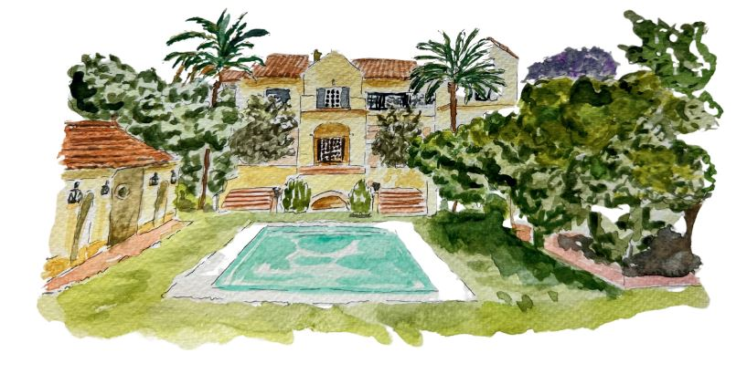

Galería de fotos


Todo comenzó un 25 de octubre de hace cuatro años, lo de casarnos el mismo día un tiempo después, ha sido pura casualidad, aunque bendita casualidad.
Volviendo al principio, ese 25 de octubre los dos estábamos en el mismo lugar sin saberlo y gracias a las chivatas de las redes sociales, lo supimos.
Otra bonita casualidad que aprovechamos para no parar de hablar durante horas a través de la pantalla.
Empezamos a notar esto que pasa pocas veces en la vida, cuando sientes que con la otra persona todo sale de forma natural, que es sencillo, que estás cómodo, que no te importaría no dormir en toda la noche porque estás donde quieres estar... Naturalidad, sencillez y espontaneidad son cualidades que nos definen y que resumen nuestra forma de vida. Nosotros somos disfrutones por naturaleza y tras esos días de primeras confidencias y encuentros, descubrimos que juntos lo éramos aún más.
Disfrutar del momento es nuestro mantra, ya sea de botellines por la Alameda, cenas en restaurantes de ensueño, viajes y escapadas, música en directo y conciertos, sofá y series, ratitos con amigos, momentos en familia, paseos y picnic por la playita...
Nos detenemos aquí porque justo uno de esos picnics y paseos fue el momento elegido por Migue (después de varios meses paseando el anillo de pedida) para pedirle matrimonio a Pili.
El lugar era el perfecto, la playa en la que ella había pasado los mejores años de su vida junto a su familia, en la que creció y en donde siente más presente, aún si cabe, a su padre. Porque fue él el que más disfrutó de esos días de verano eternos que ojalá volvieran.
Este lugar se ha convertido ahora en un bonito refugio de paz y relax para nosotros.
No podemos terminar nuestra historia sin una especial mención a Marta, hermana de la novia, que fue la que nos puso en un mismo camino para que nosotros pudiéramos elegir una misma dirección 💚 Como dato curioso, fue una bonita forma de devolverle el favor a la novia, porque ella le presentó a su marido hace ya unos cuantos años.
Y por supuesto, mirando al cielo, le mandamos un abrazo con alas a nuestros papás porque estamos seguros de que, aunque tristemente nunca nos vieron como pareja, estarán brindando por esta unión desde arriba, orgullosos de lo que estamos construyendo juntos.
Y dejando atrás los detalles más emotivos, como nos conocéis y sabéis que no nos perdemos una...
¿Cómo no íbamos a celebrar nuestro amor con vosotros y disfrutar de un día repleto de ilusión?
Así que hacedlo por nosotros, ya que lo que más felices nos hace es compartir, contagiar nuestra alegría y vivir la vida a vuestro lado.
Iglesia: Capilla Monte-sión
Hora: 12:00 h
¡Aviso importante para los menos madrugadores!
La capilla es pequeñita y el aforo limitado, por eso hemos elegido una de las plazas más emblemáticas de Sevilla, que cuenta con míticos bares para vuestra tranquilidad
Dirección: Feria, 29 – Sevilla
Lugar: BellaSombra House
Hora: 14:30 h

Dirección: Urb. Roalcao, 9, 41807 Espartinas, Sevilla
Entrada de invitados y parking por calle Sta. María
Horarios de autobus ida:14:00 h
¡Importante! desde la capilla a la parada del autobus, son unos 20 min andando, por favor tenedlo en cuenta también, a la hora de saber si vais a utilizar este medio de transporte o no. Gracias!
Horarios de autobus de vuelta aproximados:
21:00 h, 23:00 h y 1:00 h.
Estimación de precio en transporte privado desde la capilla a BellaSombra: 25€ - 30€
Queremos que te sientas cómodo/a, así que tú decides.
¡Aviso a navegantes! El cocktail será sobre césped, aunque es un terreno bastante cómodo para andar y bailar; pero creemos que esta información es de interés para las mujeres ;).
Por favor, confirma tu asistencia antes del 15 de septiembre.
¿Puedo llevar acompañante?
Sí, pasale el enlace para que se registre tambíen o hazlo tu mismo a través del formulario y avisanos si no lo teníamos previsto.
¿Hay opciones para alérgenos?
Sí, coméntanoslo en el formulario.
¿Dónde aparcar?
En la calle Sta. María(Espartinas) que es por donde entran los invitados, será dónde se pueda aparcar. Allí además habrá personal de la hacienda preparado para indicar donde aparcar.
¿Van niños a la boda?
No, esta será una celebración sólo para adultos, asi que tomaos este ratito para vosotros y disfrutad con nosotros